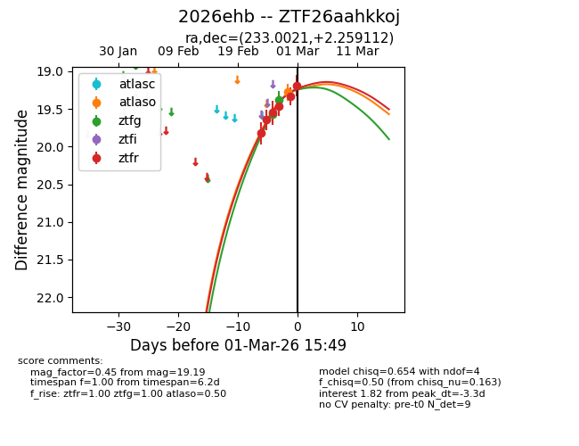
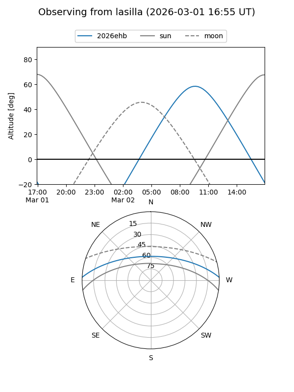
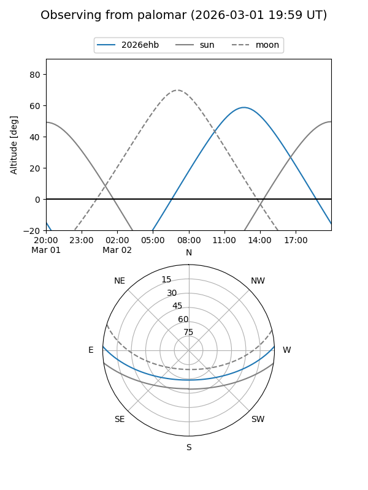
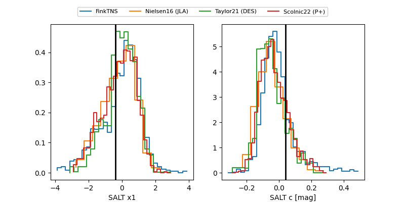

2026ehb
Target 2026ehb at 2026-03-01 15:52
Aliases and brokers:
FINK: link
Lasair: link
ALeRCE: link
TNS: link
YSE: link
alt names
ZTF26aahkkoj (ztf,fink_ztf)
2026ehb (tns,yse)
Coordinates:
equatorial (ra, dec) = 233.0021,+2.25911
equatorial (HMS+DMS) = 15:32:00.52,+02:15:32.80
galactic (l, b) = (7.0019,+44.24991)
Flags:
Photometry:
last atlaso=19.28, ztfg=19.38, ztfr=19.19
1 atlaso, 2 ztfg, 6 ztfr detections
Lightcurve

Visibility


Additional plots
